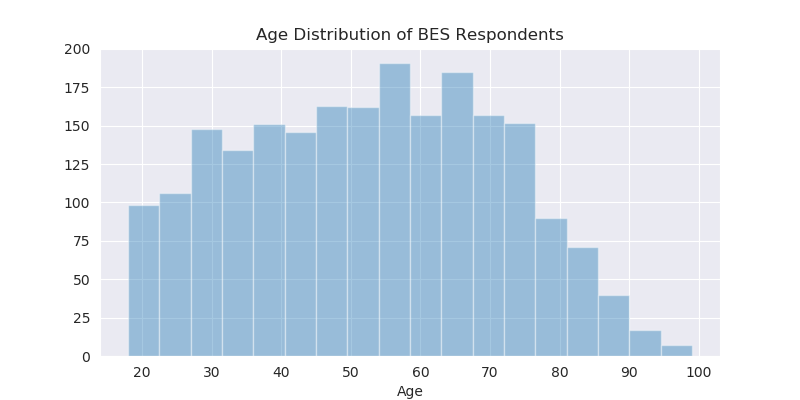
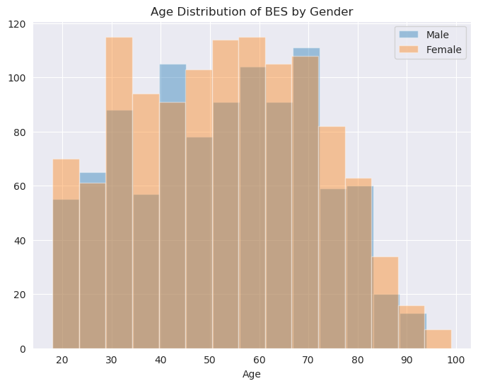
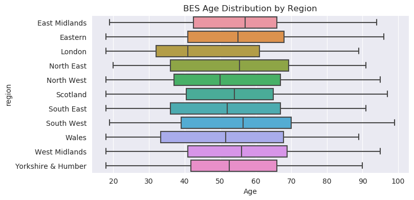
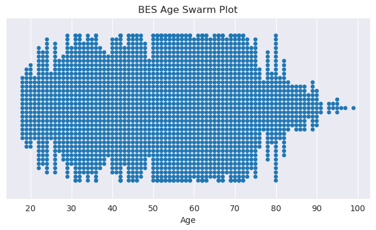
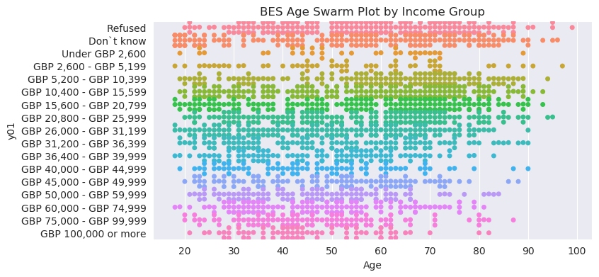
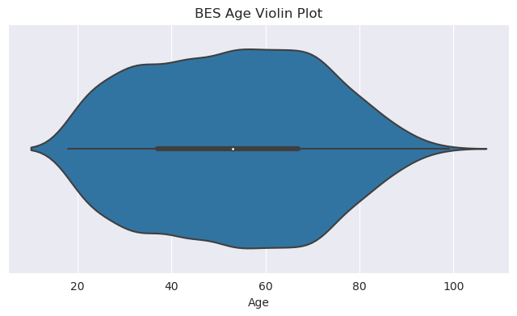
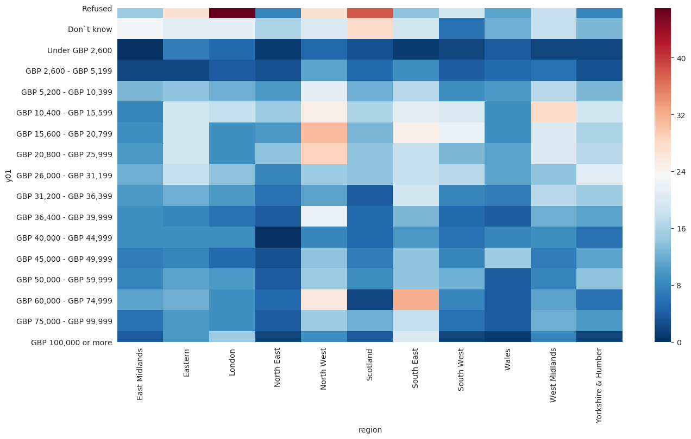

Introduction to Python for Social Science
Lecture 4 - Data Visualization
Musashi Harukawa, DPIR
3rd Week Hilary 2020
Overview
Last Week
- Advanced Data Operations
- Applying Functions to Vectors and Matrices
- Grouped Summaries
- Concatenating and Merging Data
This Week
This week we finally get to a fun topic: data visualisation.
There’s more to data visualisation than I could possibly cover in 90 minutes, so I focus on static, two-dimensional visuals; these are the kind that you are most likely to use.
Theory & Motivation
Visual Summaries as an Aid
- Returning to the theme of this course, the aim of much of data science is to understand the whole picture of your data.
- If you can do this without reading your entire dataset, all the better!
- When making data visuals, I think it’s helpful to remember that they are, in many ways, a form of summary.
- Visualising data is not just about communicating results; it is also a powerful tool for you to understand important features of your own data.
Motivating Example
| x1 | x2 | |
|---|---|---|
| count | 300.000000 | 300.000000 |
| mean | 4.048335 | 4.066768 |
| std | 4.145384 | 3.908675 |
| min | -2.304990 | -6.892820 |
| 25% | 0.102002 | 1.528010 |
| 50% | 3.389367 | 4.125494 |
| 75% | 8.039512 | 6.871554 |
| max | 11.230459 | 16.889281 |
Motivating Example
From Data Types and Structures to Visualisation
Data Types/Structures
The type and structure of your data tells you what type of figure you need:
- Number of Dimensions
- Ordered or Unordered?
- Discrete or Continuous?
Two Dimensions: X and Y
Most figures are created on a two-dimensional plane, where the dimensions are usually referred to as X (width) and Y (height).
These axes are the most versatile; they can be used to plot any kind of variable. The only tradeoff is the overall size of the figure is determined by these two dimensions.
Three Dimensions and Higher
In addition to the two dimensions given by the x and y axes in a figure, the following graphical elements can be used to depict variation along an axis:
- Color: Colors are an extremely useful means of showing categorical or ordinal differences.
- Discrete colors for a categorical dimension
- Color scale for an ordered/continuous dimension
- Panelling: Can be used to show categorical or ordered/discrete differences.
- Cannot be used to show a continuous variable.
One-Dimension: Distributions
Visuals for one-dimensional data tend to be concerned with distributions; i.e. frequencies of values along some dimension.
Useful plots include:
- Histogram
- Box (and whiskers) plot
- Swarm plot
- Violin plot
Two-Dimensions: Relationships
Visuals for two-dimensional data often fulfil one of the following two purposes:
- Comparing distributions
- Plotting functions
In addition to all of the aforementioned plots, some examples of the latter include:
- Scatter plot
- Line plot
- Bar plot
- Rug plot
Three-Dimensions and Higher: Levels
- While it is possible to draw plots that have a third, z axis, I hate how they look.
- If you are trying to show data in three or more dimensions, I suggest that you use a heatmap.
- More generally, you can use colour or shape as a means to distinguish on a third dimension (or higher).
Take-Away
When visualising data, ask yourself the following questions, then look through galleries to get an idea of what could work for you:
- Making a comparison between groups?
- Trying to show conditional relationships between variables?
- Exploring my own data?
Implementation
Two Libraries
matplotlibis the primary library for building data-based visuals in Python.- Requires a lot of explicit commands to get it to look good, but allows for nearly complete customisation of all aspects.
seabornis a more recent library, built on top ofmatplotlib.- Provides fast and convenient methods for most figures you will ever need.
- Both libraries can be used in conjunction.
The Anatomy of a Data Visual
On the back end, all matplotlib-based visuals adhere to a similar tree-like structure. By learning this structure, you can locate and customise any element of a figure.
The Matplotlib Hierarchy
Here is a truncated version of the matplotlib hierarchy:
- Figure
- Figure-level Methods (e.g. Title)
- Axes (Subplots)
- Subplot-level Methods (e.g. sub-title)
- Graphical functions
- Graphical primitives (shapes)
- Axis pairs (x-axis and y-axis)
- Axis labels
- Axis ticks
- Location
- Labels
- Legend
Figure
The figure is essentially the “canvas” upon which all visuals are made. Some parameters/methods set at this level include:
- Total size (in pixels)
- Super-title
- Saving to file
Axes (Subplots)
Subplots are the frames within which individual visuals are contained.
- If there is only one plot in the figure, then there will only be one subplot.
- If you want to put multiple plots, or “panel” your plots, then you will make use of multiple subplots.
Axes (Subplots) cont.
Most drawing methods are called at the subplot level:
- Plotting (drawing the graphical objects)
- Individual plot labels
- Legends
Graphical Functions
matplotlib and seaborn provide an enormous number of plotting functions. These functions:
- Take one or more equal-length vectors as inputs (the data)
- Draw objects accordingly to the relevant subplot
- If the function is a
matplotlibfunction, you should call it as a method of the relevant subplot. - If the function is a
seabornfunction, and there is more than one subplot, then you should pass the relevant subplot as a parameter to the function.
- If the function is a
Customisable Aspects
Graphical objects take a large number of customisable parameters, such as:
- Color
- Transparency
- Line/dot style
X and Y Axis
Subplots have xaxis and yaxis methods. Call these to customise the following aspects:
- Ticks (the little notches along the axes)
- Spacing/interval
- Labels
- Text
- Orientation
- Top/Bottom, Left/Right
- Axis labels
Anatomy, Again, with Examples
Figure
import matplotlib.pyplot as plt
f = plt.figure(figsize=(15, 8))This does not create any visible objects, but it lays down the canvas that other things will go onto.
Note:
- Most of the plotting functionality is within the
pyplotmodule ofmatplotlib. - The output of
plt.figurehas been assigned to a variable,f. This will be our means of accessing the figure and its methods. - The parameter
figsize=(15, 8)has been passed toplt.figure. This tellsmatplotlibto create a canvas that is 1500x800 pixels.
Axes (One Subplot)
f, ax = plt.subplots(1, 1, figsize=(15, 8))
f.suptitle("This is a figure with a subplot")
ax.set_title("This is a subplot", color="r")Axes (Two Subplots)
f, ax = plt.subplots(1, 2, figsize=(15, 8))
f.suptitle("This is a figure with two subplots")
ax[0].set_title("This is a subplot", color="r")
ax[1].set_title("This is another subplot", color="r")Axes (Subplot Grid System)
f, ax = plt.subplots(2, 2, figsize=(15, 8))
f.suptitle("This is a figure with four subplots")
for i in range(2):
for j in range(2):
ax[i][j].set_title(f"Subplot [{i}][{j}]", color="r")Graphical Functions (Scatter)
f, ax = plt.subplots(1, 1, figsize=(15, 8))
ax.scatter(data['x2'], data['x1'], color='r')Graphical Functions (Line)
f, ax = plt.subplots(1, 1, figsize=(15, 8))
ax.plot(np.linspace(0, 10, 100), np.linspace(0, 5, 100), color='r')Combining Graphical Functions (Scatter + Line)
f, ax = plt.subplots(1, 1, figsize=(8, 4))
ax.scatter(data['x2'], data['x1'], color='r', s=3)
ax.plot(np.linspace(-10, 20, 150), np.linspace(-3.5, 4, 150)**2)
ax.axhline(0, color='k', alpha=0.5, ls="--")
ax.axvline(0, color='k', alpha=0.5, ls="--")Adding Axis Labels
[...]
ax.xaxis.set_label_text("X-Axis Label", color='r')
ax.yaxis.set_label_text("Y-Axis Label", color='r')
Customising Tick Locations (Manual)
[...]
ax.xaxis.set_ticks(range(-10, 40, 10))
ax.yaxis.set_ticks(range(-4, 25, 2))Customising Tick Locations (Automatic)
ax.xaxis.set_major_locator(matplotlib.ticker.MultipleLocator(base=3))
ax.yaxis.set_major_locator(matplotlib.ticker.MultipleLocator(base=2))Customising Tick Labels/Orientation
f, ax = plt.subplots(1, 1, figsize=(8, 4))
sns.boxenplot(bes_df['region'], bes_df['Age'], ax=ax)
ax.xaxis.set_ticklabels(ax.xaxis.get_ticklabels(), rotation=30)Gallery
Histogram (One Category)

Histogram (Two Categories)

Box and Whisker Plot

Swarm Plot (One Category)

Swarm Plot (Multiple Categories)

Violin Plot (One Category)

Heatmap
